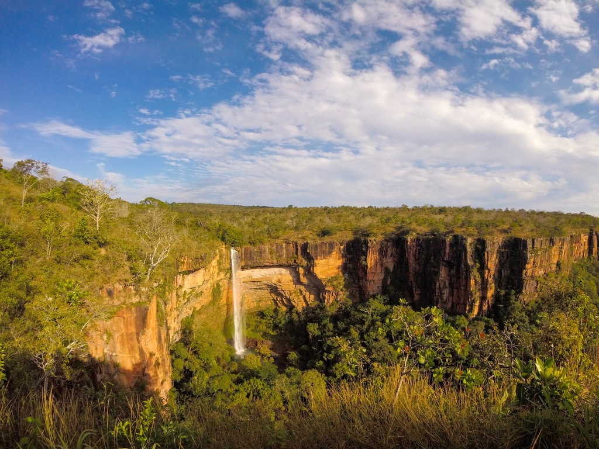

Mato Grosso é um estado localizado na região Centro-Oeste do Brasil, conhecido por sua vasta biodiversidade, especialmente na região do Pantanal, uma das maiores áreas alagadas do mundo, e por sua forte presença na agroindústria, com destaque para a produção de soja, algodão e carne bovina. O atual governador de Mato Grosso é Mauro Mendes, que tem trabalhado para promover o desenvolvimento econômico e a sustentabilidade no estado.
